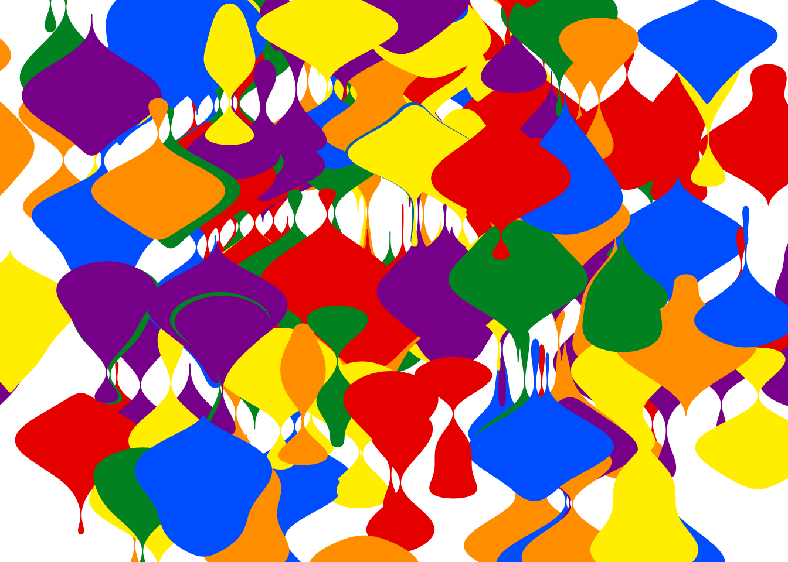

# colour schemepalette <-c("#e50000", "#ff8d00", "#ffee00", "#028121", "#004cff", "#770088")# parameters defining objectsvalues <- tibble::tibble(x =cos(seq(0, pi *5/3, length.out =6)),y =sin(seq(0, pi *5/3, length.out =6)),n = 500L,fill = palette,color = fill)# list of blob objects to add to a sketchblobs <- purrr::pmap(values, blob)# define and draw a sketch containing the objectsblobs |>sketch() |>draw()
Or this…
# parameters defining objectsvalues <- tibble::tibble(x =rnorm(200L, sd =1.5),y =rnorm(200L, sd =1.5),xend = x +1,yend = y,width =1,n = 500L,fill =sample(palette, 200L, replace =TRUE),color = fill)# list of ribbon objects to add to a sketchribbons <- purrr::pmap(values, ribbon)# define and draw a sketch containing the objectsribbons |>sketch() |>draw(xlim =c(-2, 2), ylim =c(-2, 2))

There is, as the young people say a lot to unpack here…
Act I: A bitch learns S7
Oh you people are slow. Bringing you up to speed is like trying to explain Norway to a dog – Jackson Lamb
This whole thing started because I wanted to learn how to use the relatively new S7 object oriented programming system that is intended to serve as a successor to the informal-but-janky S3 system and the formal-but-painful S4 system that already exist within R.1 It seemed like a very simple exercise when I started, but as with any exercise in learning a new thing I very quickly felt like a dog trying to understand Norway.
Writing an S7 class
Okay look. It’s kind of like this. While eventually the plan is for S7 to become part of base R, right now it’s a package so we’ll have to load the package:
library(S7)
Let’s say I want to define a class that represents a circle. I can do that using the new_class() function:
By doing so, I create a new function called circle() that I can call to create a new circle object. In the code below I create an object cc that – at least in some abstract sense of the term – corresponds to the unit circle:
cc <-circle(x =0, y =0, radius =1)cc
<circle>
@ x : num 0
@ y : num 0
@ radius: num 1
Here we have a circle object that has three “properties” x, y, and radius. We can think of it as something broadly similar to a named list, but it has rules attached. In the class definition above I specified that x, y, and radius must be numeric values: they are allowed to be integers or doubles, but they can’t be characters. Here’s what happens if I try to create a circle with radius = "big":
circle(x =0, y =0, radius ="big")
Error: <circle> object properties are invalid:
- @radius must be <integer> or <double>, not <character>
So here we see something that we wouldn’t normally have in, say, an S3 class:2 the class definition explicitly says that the radius property must be numeric, so my circle() function throws an error if I foolishly try to pass it a non-numeric radius.
Okay so what’s going on with these “properties”? Properties are analogous to “slots” in an S4 object3 and can be accessed using @:
cc@radius
[1] 1
One nice thing about S7 is that you can modify (most) properties of an object directly. So if I want to update my cc object so that it now (nominally) represents a circle with radius 2, I can do this:4
cc@radius <-2cc
<circle>
@ x : num 0
@ y : num 0
@ radius: num 2
Amazing. Thrilling. The excitement, it cannot be contained.
Let’s be honest. This circle class only represents a circle in the most abstract sense. It’s a list of three numbers that you need to describe a circle, but it doesn’t actually compute any points that lie on the circumference of said circle. If you wanted to draw the circle in question, you’d have to actually compute those points yourself. We can improve on this situation.
When I create a new circle, the points property is automatically computed using the user-specified x, y, radius, and n properties:
cc <-circle(x =1, y =2, radius =3, n = 50L)cc
<circle>
@ x : num 1
@ y : num 2
@ radius: num 3
@ n : int 50
@ points:'data.frame': 50 obs. of 2 variables:
.. $ x: num 4 3.98 3.9 3.78 3.61 ...
.. $ y: num 2 2.38 2.76 3.13 3.47 ...
When I update one of the other properties, the computed points property is automatically updated:
cc@n <- 5Lcc
<circle>
@ x : num 1
@ y : num 2
@ radius: num 3
@ n : int 5
@ points:'data.frame': 5 obs. of 2 variables:
.. $ x: num 4 1 -2 1 4
.. $ y: num 2 5 2 -1 2
Notice, however, that because I defined a “getter” function for points and (deliberately) chose not to define a setter fuction, this computed property is read-only. You cannot directly modify points:
cc@points <-data.frame(x =1:3, y =4:6)
Error: Can't set read-only property <circle>@points
For the purposes of the tool I want to create this is a desirable feature. I don’t want users trying to manually create the points that lie on the circumference of a circle. The abstract concept of a circle is defined by x, y and radius, and if I want to create n evenly spaced points on the circle, then these points are automatically computed as a byproduct of specifying these values.
Validators
circle <-new_class(name ="circle", properties =list(x =new_property(class_numeric, default =0),y =new_property(class_numeric, default =0),radius =new_property(class_numeric, default =1),n =new_property(class_integer, default = 100L),points =new_property(class = class_data.frame,getter =function(self) { angle <-seq(0, 2* pi, length.out = self@n)data.frame(x = self@x + self@radius *cos(angle),y = self@y + self@radius *sin(angle) ) } ) ),validator =function(self) {if (length(self@x) !=1) return("x must be length 1")if (length(self@y) !=1) return("y must be length 1")if (length(self@radius) !=1) return("radius must be length 1")if (length(self@n) !=1) return("n must be length 1")if (self@radius <0) return("radius must be a non-negative number")if (self@n < 1L) return("n must be a positive integer") })
circle(radius =-0.234)
Error: <circle> object is invalid:
- radius must be a non-negative number
Building structure
To start transforming this into something a little more realistic, we will need to create a richer collection of classes. For instance, in the code above I stored the computed points as a simple data frame. It would be more sensible to define an actual S7 class for this, with its own validator to make sure that any shape classes I define compute a valid set of points:
points <-new_class(name ="points",properties =list(x = class_numeric,y = class_numeric ),validator =function(self) {if (length(self@x) !=length(self@y)) {"x and y must be the same length" } })
Similarly, when the time comes to start drawing these things, my circles (and other shapes) will need to have a defined style. Again, I can create a class for this:
You’ll notice that style currently doesn’t have a validator. It probably should, but I haven’t yet thought carefully about what constraints I want to impose on style objects, so right now this is a bit freeform.
Later on, I’m going to define several different kinds of drawable shapes, and they’ll have some structural similarities that I want to enforce. To that end I’ll create an class called drawable:5
Okay, so now we can define circle as a subclass of drawable:
circle <-new_class(name ="circle",parent = drawable,properties =list(x =new_property(class_numeric, default =0),y =new_property(class_numeric, default =0),radius =new_property(class_numeric, default =1),n =new_property(class_integer, default = 100L),points =new_property(class = points,getter =function(self) { angle <-seq(0, 2* pi, length.out = self@n)points(x = self@x + self@radius *cos(angle),y = self@y + self@radius *sin(angle) ) } ) ),validator =function(self) {if (length(self@x) !=1) return("x must be length 1")if (length(self@y) !=1) return("y must be length 1")if (length(self@radius) !=1) return("radius must be length 1")if (length(self@n) !=1) return("n must be length 1")if (self@radius <0) return("radius must be a non-negative number")if (self@n < 1L) return("n must be a positive integer") })
cc <-circle()cc
<circle>
@ style : <style>
.. @ color : chr "black"
.. @ fill : chr "black"
.. @ linewidth: num 1
@ points: <points>
.. @ x: num [1:100] 1 0.998 0.992 0.982 0.968 ...
.. @ y: num [1:100] 0 0.0634 0.1266 0.1893 0.2511 ...
@ x : num 0
@ y : num 0
@ radius: num 1
@ n : int 100
class(cc)
[1] "circle" "drawable" "S7_object"
Notice though, that this is cumbersome: if you want to override the default style you have to create a circle like this
circle(style =style(color ="red"), radius =2)
<circle>
@ style : <style>
.. @ color : chr "red"
.. @ fill : chr "black"
.. @ linewidth: num 1
@ points: <points>
.. @ x: num [1:100] 2 2 1.98 1.96 1.94 ...
.. @ y: num [1:100] 0 0.127 0.253 0.379 0.502 ...
@ x : num 0
@ y : num 0
@ radius: num 2
@ n : int 100
The reason this is cumbersome is that I have created a structure where all drawables necessarily contain a user-customisable style object and a read-only points object. This is a deliberate design choice because I want the ability to easily extract these two things out of any given object:
cc@style
<style>
@ color : chr "black"
@ fill : chr "black"
@ linewidth: num 1
As you can imagine, this is a handy feature in a generative art tool. Nevertheless it’s a huge pain in the arse when it comes to constructing a new circle object. Fortunately we have…
Constructors
circle <-new_class(name ="circle",parent = drawable,properties =list(x = class_numeric,y = class_numeric,radius = class_numeric,n = class_integer,points =new_property(class = points,getter =function(self) { angle <-seq(0, 2* pi, length.out = self@n)points(x = self@x + self@radius *cos(angle),y = self@y + self@radius *sin(angle) ) } ) ),validator =function(self) {if (length(self@x) !=1) return("x must be length 1")if (length(self@y) !=1) return("y must be length 1")if (length(self@radius) !=1) return("radius must be length 1")if (length(self@n) !=1) return("n must be length 1")if (self@radius <0) return("radius must be a non-negative number")if (self@n < 1L) return("n must be a positive integer") },constructor =function(x =0, y =0, radius =1, n = 100L, ...) {new_object(drawable(),x = x,y = y,radius = radius,n = n,style =style(...) ) })
So now I can create a circle in my preferred style in a natural way:
cc <-circle(radius =2, fill ="purple")cc
<circle>
@ style : <style>
.. @ color : chr "black"
.. @ fill : chr "purple"
.. @ linewidth: num 1
@ points: <points>
.. @ x: num [1:100] 2 2 1.98 1.96 1.94 ...
.. @ y: num [1:100] 0 0.127 0.253 0.379 0.502 ...
@ x : num 0
@ y : num 0
@ radius: num 2
@ n : int 100
Other drawables
shape <-new_class(name ="shape",parent = drawable,properties =list(x = class_numeric,y = class_numeric,points =new_property(class = points,getter =function(self) {points(x = self@x, y = self@y) } ) ),validator =function(self) {if (length(self@x) !=length(self@y)) {"x and y must be the same length" } },constructor =function(x, y, ...) {new_object(drawable(),x = x,y = y,style =style(...) ) })
method(draw, class_any) <-function(object, ...) { rlang::warn("Non-drawable objects ignored by draw()")return(invisible(NULL))}
draw("a string is not a drawable")
Warning: Non-drawable objects ignored by draw()
Act III: Ambient
Blobs
Blobs are essentially “circles with a non-constant radius”, where the irregularity in the radius is a smoothly varying distortion created with Perlin noise:
blob <-new_class(name ="blob",parent = drawable,properties =list(x = class_numeric,y = class_numeric,radius = class_numeric,range = class_numeric,n = class_integer,frequency = class_numeric,octaves = class_integer,seed = class_integer,points =new_property(class = points,getter =function(self) { angle <-seq(0, 2*pi, length.out = self@n) pointwise_radius <- ambient::fracture(noise = ambient::gen_simplex,fractal = ambient::fbm,x = self@x +cos(angle) * self@radius,y = self@y +sin(angle) * self@radius,frequency = self@frequency,seed = self@seed,octaves = self@octaves ) |> ambient::normalize(to = self@radius +c(-1, 1) * self@range)points(x = self@x + pointwise_radius *cos(angle),y = self@y + pointwise_radius *sin(angle) ) } ) ),constructor =function(x =0,y =0,radius =1,range =0.2,n = 100L,frequency =1,octaves = 2L,seed = 1L, ...) {new_object(drawable(),x = x,y = y,radius = radius,range = range,n = n,frequency = frequency,octaves = octaves,seed = seed,style =style(...) ) },validator =function(self) {if (length(self@x) !=1) return("x must be length 1")if (length(self@y) !=1) return("y must be length 1")if (length(self@radius) !=1) return("radius must be length 1")if (length(self@range) !=1) return("range must be length 1")if (length(self@n) !=1) return("n must be length 1")if (length(self@frequency) !=1) return("frequency must be length 1")if (length(self@octaves) !=1) return("octaves must be length 1")if (length(self@seed) !=1) return("seed must be length 1")if (self@radius <0) return("radius must be a non-negative number")if (self@range <0) return("range must be a non-negative number")if (self@frequency <0) return("frequency must be a non-negative number")if (self@n < 1L) return("n must be a positive integer")if (self@octaves < 1L) return("octaves must be a positive integer") })
bb <-blob(n = 500L)draw(bb)
So, using the rainbow palette I defined at the top of the post:
For folks outside of the R community: S3, S4, and S7 are all considered to be “functional” OOP systems, and they are broadly similar to function overloading in C++ and, I have recently learned, is also analogous to how methods are defined in Julia for functions of the same name but with different signatures. The functional style of OOP programming is one in which methods attach to generic functions (or to function names), as opposed to more traditional “encapsulated” OOP systems in which methods attach to objects. The encapsulated style is standard in Python, for example, and also appears in R via the R6 OOP system that I have used in other blog posts (e.g., here and here). I mention these tiresome details because I have learned to my detriment that if I don’t exhaustively list the various distinctions between OOP systems and how R adopts multiple styles, I will have to deal with tiresome people mansplaining to me how R is bad at OOP and how OOP in R is wrong and isn’t really OOP and honestly I’m asleep before I finish reading the complaint.↩︎
Or at least not without a lot of extra effort on the developer side.↩︎
In contrast S3 is so chaotically informal that it doesn’t have any real notion of an “accessor” operator. Some S3 classes are atomic objects internally (e.g., a Date is simply a double with some attributes) and have no accessor operator, whereas others are lists internally and as such use $ as the accessor.↩︎
Like S3 and S4 and like the vast majority of R objects, S7 objects have copy-on-modify semantics. This is distinct to environments and R6 classes which have reference semantics. But let’s be honest, shall we? You either (a) already know this, (b) don’t care, or (c) don’t find this telegraphic explanation very helpful because it really isn’t very helpful. My aims in this post are pretty limited so really if you want to wrap your head around this stuff a better bet is to read Advanced R.↩︎
Ideally I’d like to make this an abstract class, in which users can’t directly create a new drawable. In principle this is achievable by setting abstract = TRUE in the call to new_class(), but what I’ve found so far is that creates problems when – as happens slightly later in the post – I define a custom constructor function for my “circle-subclassing-drawable” class. I imagine this will be dealt with at some point, but for now I’m just ignoring the idea of abstract classes.↩︎
@online{navarro2024,
author = {Navarro, Danielle},
title = {Creating New Generative Art Tool in {R} with Grid, Ambient,
and {S7}},
date = {2024-02-22},
url = {https://blog.djnavarro.net/posts/2024-02-22_s7},
langid = {en}
}
![]()